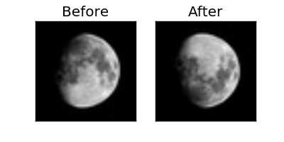

Vertically flip the input¶
Example usage of the FlipUD augmentation.
import sys
import numpy as np
from scipy.ndimage import imread
import matplotlib.pyplot as plt
from astronet.augmentations import FlipUD
X = np.array([imread('moon.jpg').transpose(2,0,1)])
y = np.ones(1)
augment = FlipUD(prob=1)
Xtransformed, _, _ = augment.apply(X, y, None)
fig, ax = plt.subplots(len(X),2, figsize=(4,2), squeeze=False,
subplot_kw={'xticks': [], 'yticks': []})
ax[0][0].set_title("Before")
ax[0][1].set_title("After")
for i in range(len(X)):
ax[i][0].imshow(X[i].transpose(1,2,0), cmap=plt.get_cmap("gray"))
ax[i][1].imshow(Xtransformed[i].transpose(1,2,0), cmap=plt.get_cmap("gray"))
Total running time of the script: ( 0 minutes 0.376 seconds)